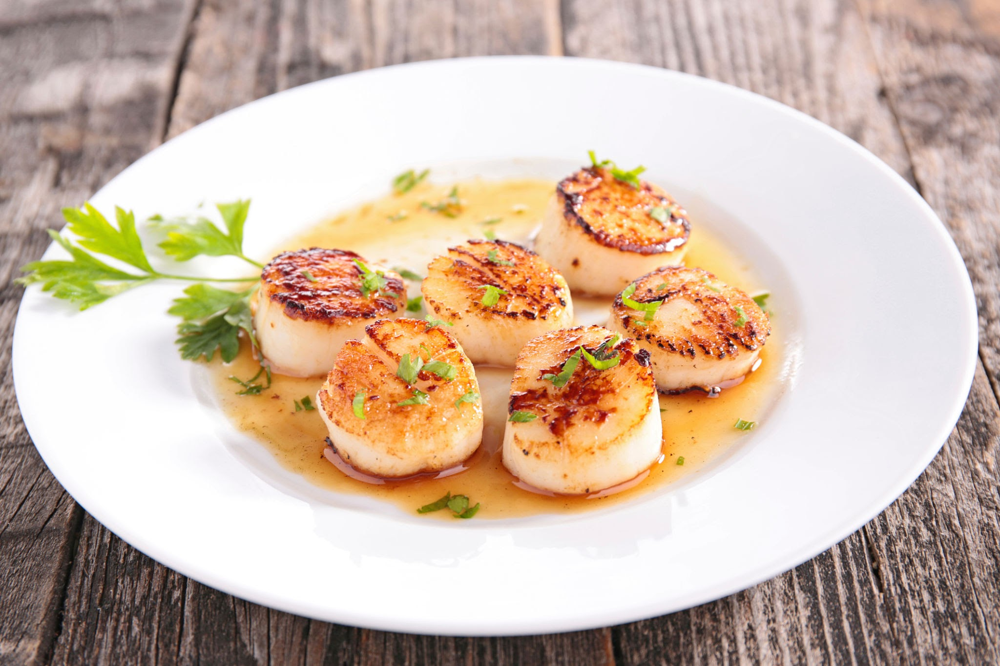

Scallops

This recipe is for a pan seared scallops.
Ingredients
- Scallops
- Salt
- Pepper
- butter
- Garlic
- Lemon
Steps
- Preheat man with oil until smoking
- Season scallops with salt and pepper
- Once pan is smoking drop scallops into the pan leaving room inbetween
- Sear about a minute each side or until browned
- Turn down the heat and add your butter and lemon
- Let cook for another 2 minutes and serve
Home